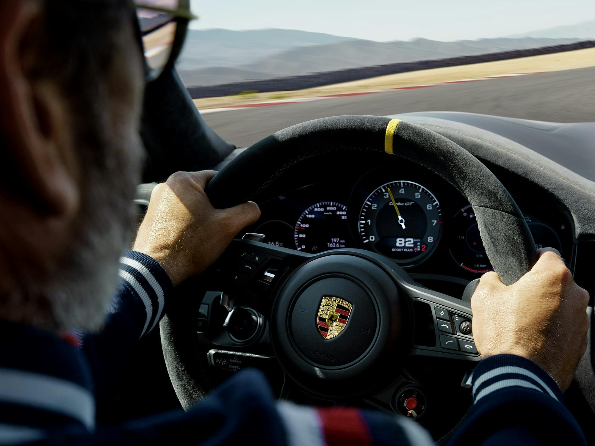
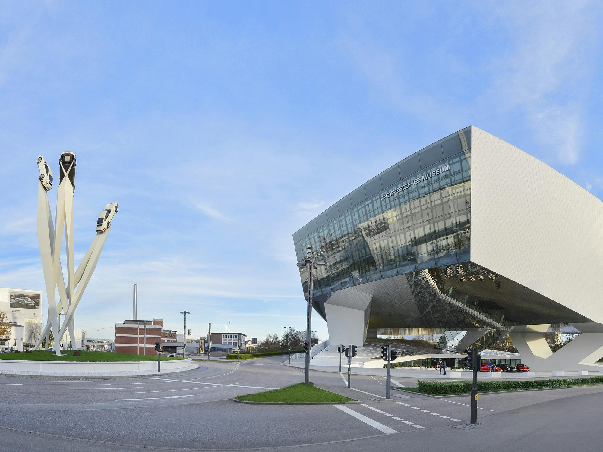
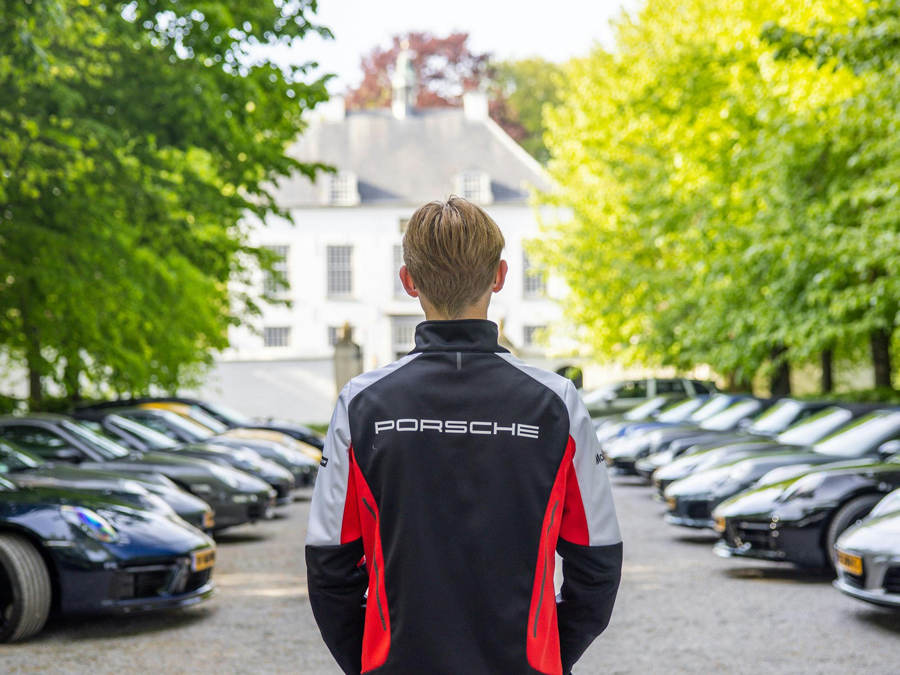
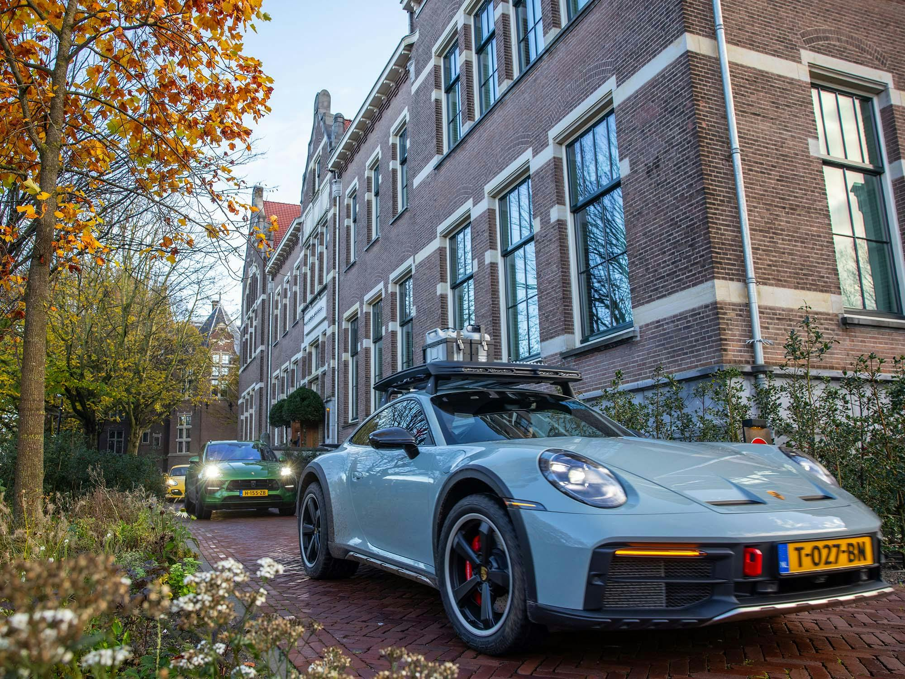

Porsche24.
Zet de zintuigen op scherp met Porsche24.
Porsche24.
Porsche24 is een Nederlands initiatief dat Porsche rijders beloont voor rijden en deelname aan evenementen. Geniet van events, rijtrainingen, de mooiste routes, het laatste Porsche nieuws en bijzondere verrassingen. Porsche24 zet uw zintuigen op scherp. Beleef samen met andere Porsche rijders exclusieve momenten waarbij ieder zintuig wordt geprikkeld. Met Porsche24 verdient u punten en badges met elke gereden kilometer en elkevenement waaraan u deelneemt. Maak een foto in de Porsche24 app enregistreer uw gereden kilometers. Iedere kilometer is een punt waard. Deeerste bestemming: level Silver. Dan volgen de levels Red en Yellow. Metieder level profiteert u van extra beloningen en exclusieve evenementen.
Wees welkom op Porsche24.
Porsche24 is de exclusieve toegang tot de wereld van Porsche. Deze app is exclusief beschikbaar voor Porsche rijders en is een bijzondere community. Wees altijd als eerste op de hoogte van het laatste Porsche nieuws, de bijzondere evenementen en de meest unieke routes. Het is de sleutel tot een exclusieve Porsche wereld. Download nu Porsche24 en beleef meer met uw Porsche.
Op weg naar groei: ontdek de Porsche24 levels.
-

Level Porsche24.
Level Porsche24 is waar de reis begint. Verdien punten en kwalificeer voor nieuwe levels. Hoe meer u rijdt, hoe verder u komt, en hoe meer u beleeft. Ga op pad en laat de passie voor Porsche bloeien.
-

Level Silver.
Level Silver is de eerste bestemming. Als level Silver Member profiteer je van de Porsche Museum jaarkaart en ontvang je het Porsche Magazine, Christophorus.
-

Level Red.
Bij level Red draait het volop om beleven. Ontvang speciale beloningen waaronder bijvoorbeeld een Porsche24 event voucher, een Porsche Advanced Driver Training en neem deel aan de jaarlijkse Level Red & Yellow Rally.
-

Level Yellow.
Het ultieme exclusieve hoogtepunt van Porsche24 is level Yellow. Beleef onbetaalbare ervaringen. Level Yellow belichaamt ongekende luxe en ongeëvenaarde Porsche passie.
Bijzondere evenementen, exclusief op Porsche24.
Op Porsche24 komt een breed scala aan Porsche evenementen samen. Van evenementen bij een Porsche Centrum tot evenementen van Porsche Nederland. Ontdek de Porsche Track Experience, de Porsche Travel Experience of één van de andere unieke evenementen die uw zintuigen prikkelen.
Download Porsche24.
Porsche24 is de plek waar u het maximale uit uw Porsche haalt. Download de app en wees klaar voor een wereld van exclusieve evenementen en verrassingen. Start vandaag op Porsche24 en zet u schrap voor een rit vol avontuur.
Aftermovies.
Veelgestelde vragen.
Hoe kan ik mij registreren voor Porsche24?
Download de app voor uw iOS of Android toestel en volg de stappen in de app om uw registratie te voltooien. U kunt uw Porsche op twee manieren toevoegen: door uw kenteken in te voeren of - als uw auto niet op Nederlands kenteken staat - uw chassisnummer. Heeft u vragen of opmerkingen, neem dan gerust contact met ons op: porsche24@nl.porsche.com.
Welke evenementen vind ik in Porsche24?
De evenementen in Porsche24 worden georganiseerd door Porsche Nederland, uw Porsche Centrum of een van onze partners. Onder de mogelijke evenementen vallen de Porsche Track Experience, Porsche Travel Experience, een zintuiglijke beleving via Porsche24 of een exclusieve bijeenkomst bij een Porsche Centrum.
Hoe verdien ik punten?
U kunt op twee manieren punten verdienen. 1. Door het registreren van gereden kilometers. Via de app kunt u uw kilometerstand opgeven. De eerste keer dat u dit doet, wordt het startaantal bepaald. Hierna levert elke geregistreerde kilometer u 1 punt op. 2. Door deelname aan events die via Porsche24 georganiseerd worden. Bij elk event staat vermeld hoeveel punten er verdiend kunnen worden. Na afloop van het event krijgt u de punten toegekend.
Hoeveel punten moet ik behalen voor de levels Silver, Red en Yellow?
Als u zich registreert begint u op het basis level van Porsche24. Hiermee heeft u toegang tot de app, de routes en de voor het basis level beschikbare events. Het eerstvolgende doel is level Silver, gevolgd door Red en Yellow. Hoe bereikt u de volgende levels? Level Silver - vanaf 911 punten. Het eerste level waarbij u toegang krijgt tot rewards, waaronder een abonnement op de Nederlandse uitgave van het Christophorus Magazine. Level Red - kwalificatie bij 35.000 punten. De lidmaatschapsfee voor 1 jaar Level Red is € 299. Typische Porsche privileges, kortingen, uitnodigingen voor unieke events en bijzondere verrassingen. Bekijk de inhoud van level Red door in de Porsche24 app via uw profielpagina naar Level info te gaan. Level Yellow - kwalificatie bij 75.000 punten. De lidmaatschapsfee voor 1 jaar Level Yellow is € 1911. Exclusief voorbehouden aan de meest actieve Porsche rijders. Een jaar waarin unieke belevenissen voor bijzondere herinneringen zorgen. Bekijk de inhoud van level Yellow door in de Porsche24 app via uw profielpagina naar Level info te gaan.